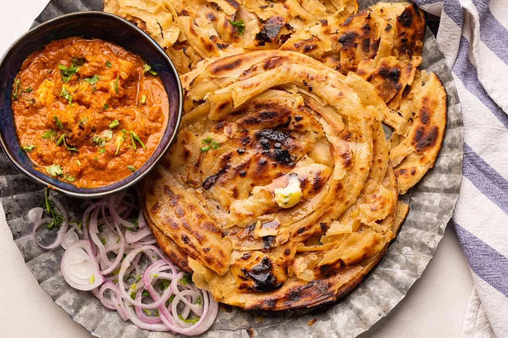

Lachha Paratha

Description(What is Lachha Paratha?)
These layered flatbreads are named after the buttery,
flaky layers that appear when you cook this paratha.
Thanks to all those beautiful layers,
these parathas can look a little complicated to make,
but that is actually far from the truth.
Ingredients
Steps to follow
- Add whole wheat flour and salt to a bowl.
Make a small well in the middle and add 1 teaspoon of ghee.
Mix this using your fingers till the mixture resembles breadcrumbs.
- Add lukewarm water little by little and knead into a soft, supple dough.
Add upto one tablespoon of extra water, if necessary.
Form into a ball and rest for 20 minutes.
- Take a golf ball-sized piece of dough and roll it out into a thin circle.
The thinner the better. Brush all over with a teaspoon of melted ghee and
sprinkle a thin layer of dry atta or whole wheat flour all over the ghee.
- Start pleating it from one side, making thin pleats as you go. Stretch this
pleated dough to lengthen it and then roll it up into a ball. Dust it with
flour and roll it out into a 5 inch circle to make lachha parathas.
Repeat this with the remaining dough.
- Heat a tawa till evenly hot. Place the paratha and cook it for 2-3 minutes.
Once you start seeing bubbles form, flip it. Cook it on a low flame for 2-3 minutes
on the other side.
- Using tongs, place the semi cooked paratha directly on the flame and cook it on the
open fire while flipping it every few seconds to ensure it's evenly cooked.
- Once the paratha is crispy and golden brown, smear it with ghee or butter.
Crumple it with your hands to reveal the layers. Serve hot.
Back to home page